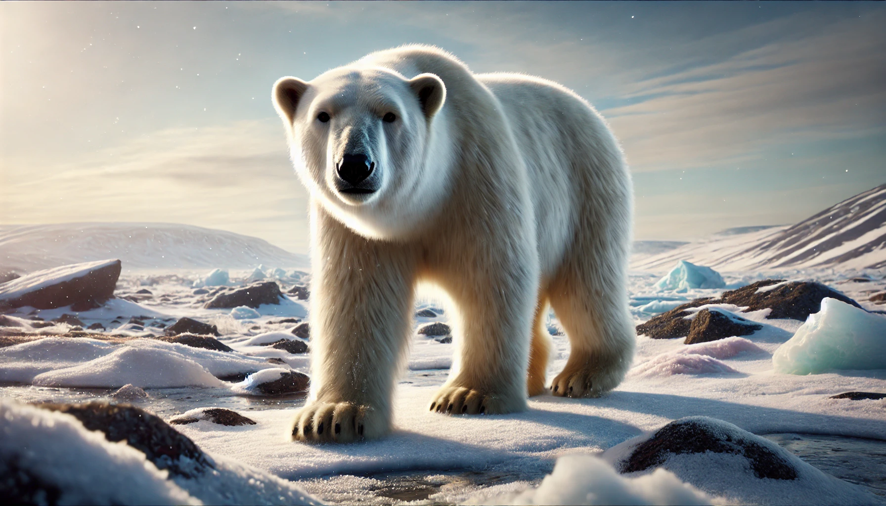
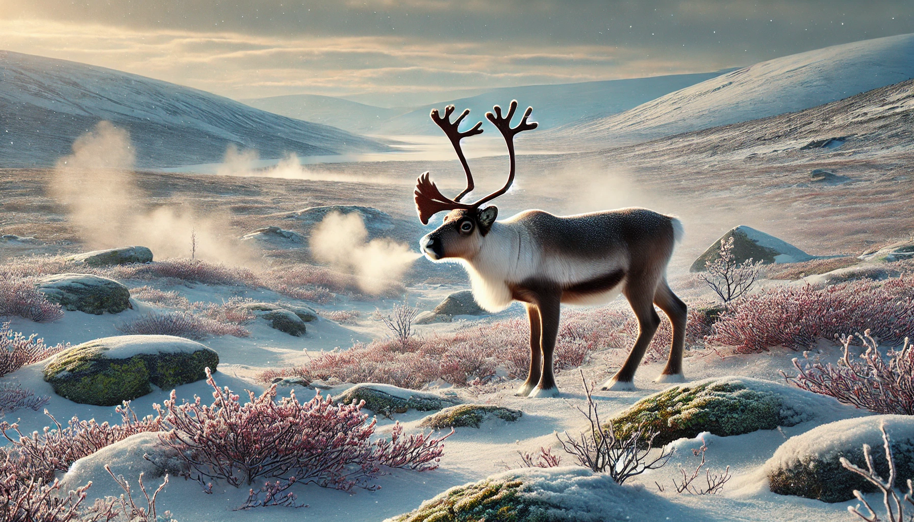
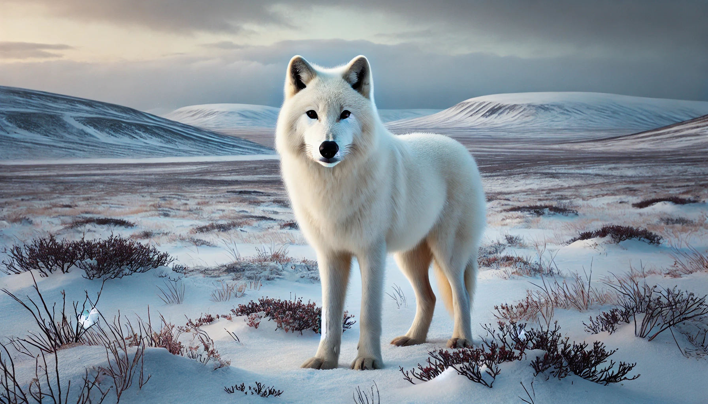
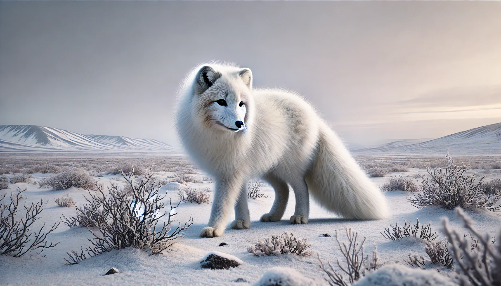
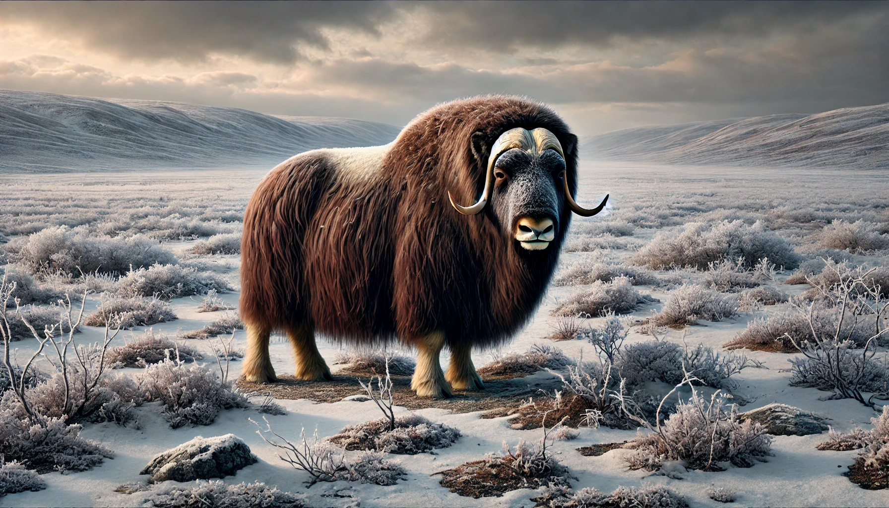
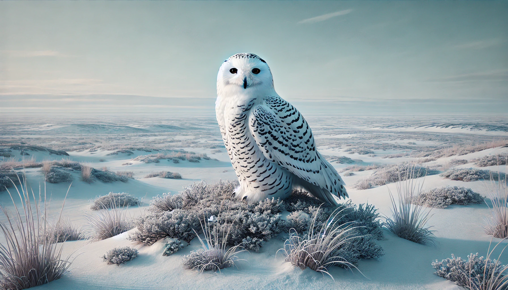
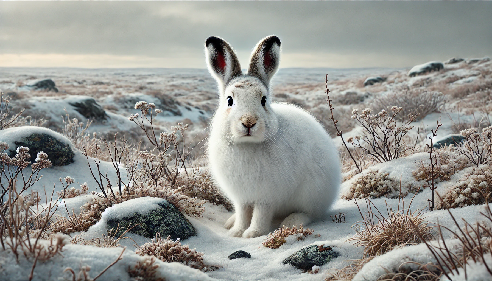
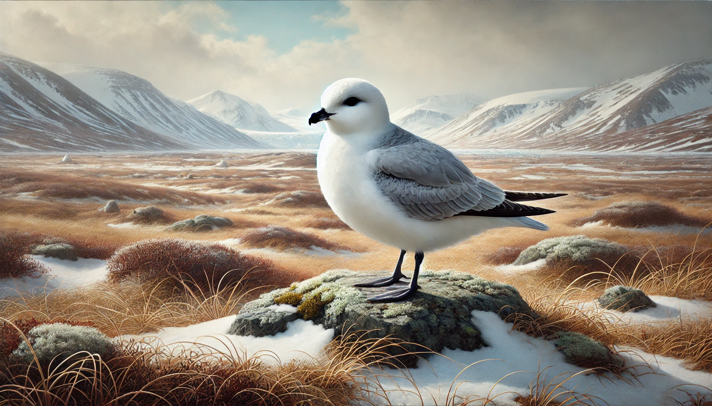
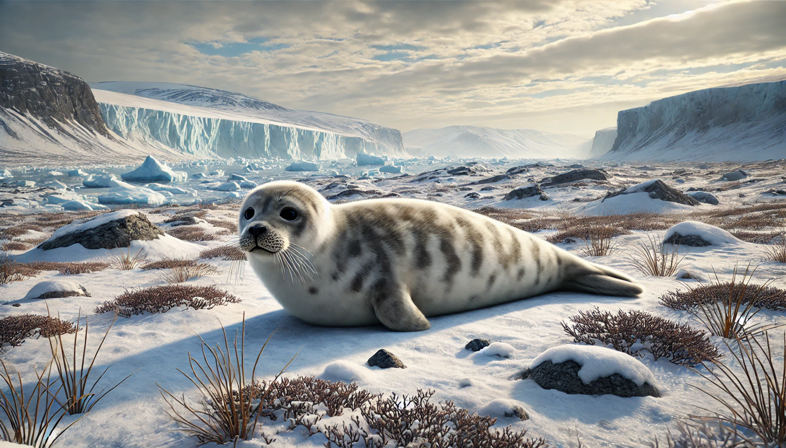
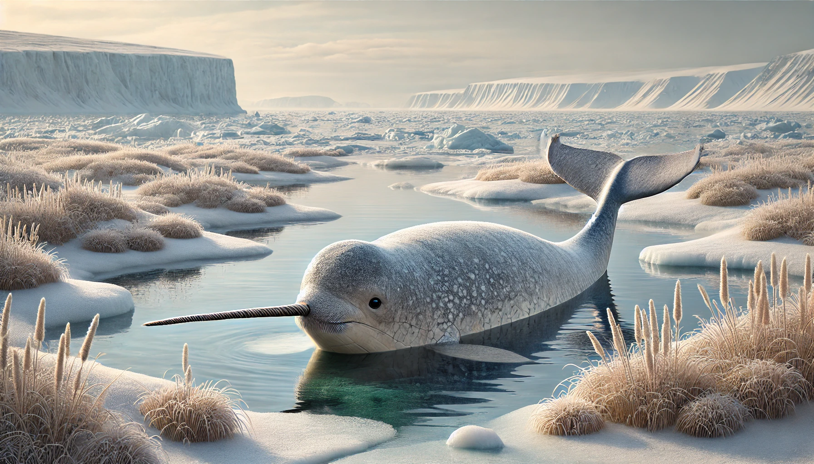

Família Ursidae
Urso-polar
Ursus maritimus

Família Cervidae
Rena
Rangifer tarandus

Família Canidae
Lobo-ártico
Canis lupus arctos

Família Canidae
Raposa-do-ártico
Vulpes lagopus

Família Bovidae
Boi almiscarado
Ovibos moschatus

Família Strigidae
Coruja-das-neves
Bubo scandiacus

Família Leporidae
Lebre-ártica
Lepus arcticus

Família Procellariidae
Fulmar-ártico
Fulmarus glacialis

Família Phocidae
Foca-anelada
Pusa hispida

Família Monodontidae
Narval
Monodon monoceros
Raposa-do-ártico
Description
Boi-almiscarado
Description
Coruja-das-neves
Description
Fulmar-ártico
Description